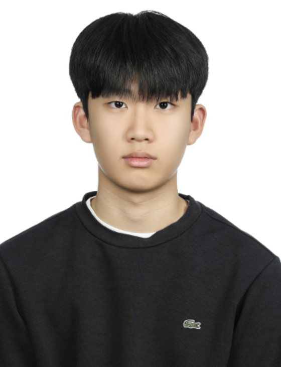

서울과학고등학교 2학년
AI · 물리학 · 기계공학에 관심이 많고, 머릿속에 떠오른 아이디어를 직접 설계하고 실제로 만들어보는 것을 좋아합니다.

기계공학, 물리학, AI, 프로그래밍에 관심이 있고, 물리 현상을 코딩을 통해 분석하는 것에 흥미가 있습니다. 궁금한 것에 대해 깊이 탐구하는 능력을 가지고 있으며, 무언가를 설계하고 실제로 제작하는 것을 좋아합니다. 요즘에는 아이디어가 떠올랐을 때 그것을 AI를 활용하여 자주 만들어보기도 합니다. 제 머릿속 아이디어를 AI를 활용하여 구체화할 수 있는 능력 또한 제 강점이라고 생각합니다. 또한 새로운 프로그래밍 언어를 빠르게 익히는 능력도 갖추고 있습니다.
Python의 기본적인 문법과 알고리즘을 익혔습니다.
Python의 정규표현식, 정렬 알고리즘, 객체지향 프로그래밍을 익혔습니다.
Pandas, NumPy를 통한 EDA를 배웠습니다. WEB과 ML의 기본 이론에 대해 배웠습니다.
기본 문법을 자유자재로 활용하고, 객체지향 프로그래밍의 원리를 이해해 Python으로 프로그램·게임을 개발할 수 있습니다. 다양한 알고리즘을 다룰 수 있습니다.
데이터를 불러와 NumPy·Pandas로 EDA를 진행하고, 이를 바탕으로 KNN·KMeans·선형회귀 같은 기초 ML 알고리즘을 구현할 수 있습니다.
일반물리학 수준까지 근본 원리를 이해하고 공식을 적절히 활용합니다. 과제연구에서 모델을 직접 설계하고, 구상한 모델을 물리 수식으로 직접 예측할 수 있습니다.
탐구 주제를 선정하고 실험의 전 과정을 설계합니다. 정량적 실험을 위해 통제 변인을 정리하고, 이론으로 결과를 예측한 뒤 실제 실험으로 검증합니다.
물리·화학 분야의 정밀 실험을 수행하고, 오차 전파 이론으로 오차를 분석합니다. Raw data를 엑셀의 선형회귀 등으로 분석하고, 오차 발생 시 보정 방법을 제안·적용합니다.
아이디어가 떠오르면 AI를 적극 활용해 구체화합니다. 데이터과학·컴퓨터과학 학습 시 문법을 익히거나, 물리학 등의 정리 노트를 만들 때에도 AI를 활용합니다.
PDF를 업로드해 서재처럼 정리하고 브라우저에서 바로 읽는 PDF 라이브러리·리더. pdf.js 렌더링과 Supabase 인증·클라우드 동기화를 결합했습니다.
데이터 분석(EDA)으로 재생에너지 수급 불균형을 실증하고, 이를 해결할 P2P 전력 거래 플랫폼을 기획·설계한 솔버톤 프로젝트. 데이터 수집·시각화와 시스템 설계를 담당했습니다.
쥐가 고양이를 피해 탈출하는 2D 플랫포머 게임(Pygame). 플랫포머 엔진·충돌 판정·장애물·고양이 경고/경계 게이지와 아트·애니메이션을 담당했습니다.
생활 패턴·선호도·상벌점을 함께 고려해 방을 배정하고 결과를 시각화하는 Python 프로그램. 배치도 GUI와 조회·검색·관리 기능을 구현했습니다.
2025년 서울과학고등학교 입학
한성 손재한 장학회 13기 장학생 선발